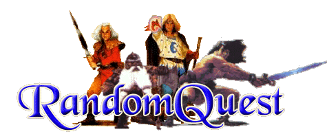

What Is RandomQuest?
RandomQuest
is a new, GameMaster-less way to play HeroQuest. Dungeons are created randomly,
as is monster placement and treasure.
RandomQuest is loosely based on the
card system found in Warhammer Quest. It uses card decks to determine passages,
rooms, monsters, and treasures. Quests from any source can be played in
RandomQuest - HeroQuest quests, Advanced HeroQuest quests, Warhammer Quest
quests, Dungeon and Dragons, etc.
RandomQuest was designed so that any
number of Heroes can play. Solo questing is easy, as is multi-Hero parties.
Players are not limited to one of each Hero, nor are they limited to the basic
Heroes that came with HeroQuest.
RandomQuest Downloads